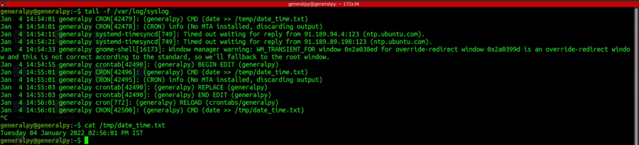
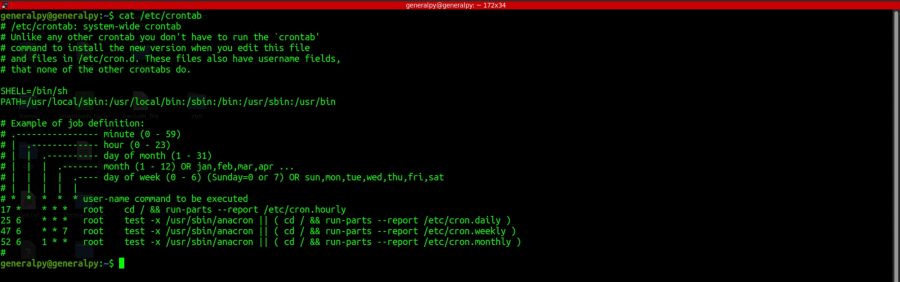

Task Automation and Scheduling using Cron
Cron is used to perform a task repeadately at a specific time. Cron runs as an daemon and the scheduled tasks are known as cronjobs.
crontab, short for cron tables can mean 3 things :
1. Each user have its own crontab file inside /var/spool/cron/crontab directory. User can define cronjobs in this file.
2. There are system wide crontabs available in /etc/cron which run system wide cron jobs.
3. crontab is a command which is used to manage cronjobs for users.
crontab for user is basically a file in which user's cront jobs are stored. It can be added directly as it is a text file but it is usually not recommended. Use crontab command to edit user's crontab file. It will open crontab file in default text editor and then verify file contents before exiting.
To list crontab file for current user user :
crontab -l

Use crontab -e to open crontab file in editor. If file doesn't exists, crontab will create one.
If no default editor is selected, crontab will give option to select an editor.
We can run a cron job according to minute, hour ,day of month , month and day of week. We don't need to remember the format as it is already commented inside the default crontab file.
Syntax for cronjob is :
minute hour day_of_month month day_of_week commandTo run cronjob for all instance of that time period use * in its place. Like to run a cronjob every minute we can put * in the minute column.
Hour is in 24 hour format with range of 0 to 23. Day of week range from 0-7 with 0 and 7 being sunday.
Examples :
To run a task every day at 4 pm.
0 16 * * * command
To run a task every monday at midnight
0 0 * * 1 command
To run a task first day of month at midnight
0 0 1 * * command
We can separate times with , to list multiple times for same job
Examples :
To run a task every day at 4 am and 4 pm
0 4,16 * * * command
To run a task every monday and saturday
* * * * 1,6 command
We can use - to use a range for time
Examples :
To perform a task every work day between 9am to 5pm
* 9-17 * * 1-5 command
To perform a task every day between jan and april
0 0 1 1-4 * command
We perform a task after a time interval ,we can use / and specify the time after that.
Examples :
To perform a task every minute.
*/1 * * * * command
To perform a task every 3rd weekday.
0 0 * * */3 command.
There are also predefined macros for cron available which can be used to perform general tasks
@yearly to do a job on 1st day midnight of every year
@monthly to do a job on 1st day midnight of every year
@weekly to do a job on sunday midnight every week
@hourly to do a job every hour
@daily to perform a job every day midnight
@reebot to perform a job at every boot
Let's create a cron job that appends current timestamp to a file every minute.
Cronjob for it will be
*/2 * * * * date >> /temp/date_time.txt
We will now see logs for crontab which are stored in /var/log/syslog in ubuntu and /var/log/cron in centos.

Note that root can list, edit and remove crontab file for any user by using -u and specifying username
sudo crontab [option -u usernameTo remove a crontab file use -r option with crontab file.
There are some sites like https://crontab.guru/ which can be used to schedule time for cronjobs easily.
System wide cronjobs can be found inside /etc/cron.
To run a cron job according to a time which are described above(cron.daily and others) simply put the scripts in respective directories.

Note that crontab uses environvariables of its own which also includes its path, hence take care of path when using corntabs. Use absolute paths wherever possible.
Cron is used for machines which run continously which means if machine is switched of and it missed a task, that task is not run when machine is run. Also cron provides no error control for the jobs.